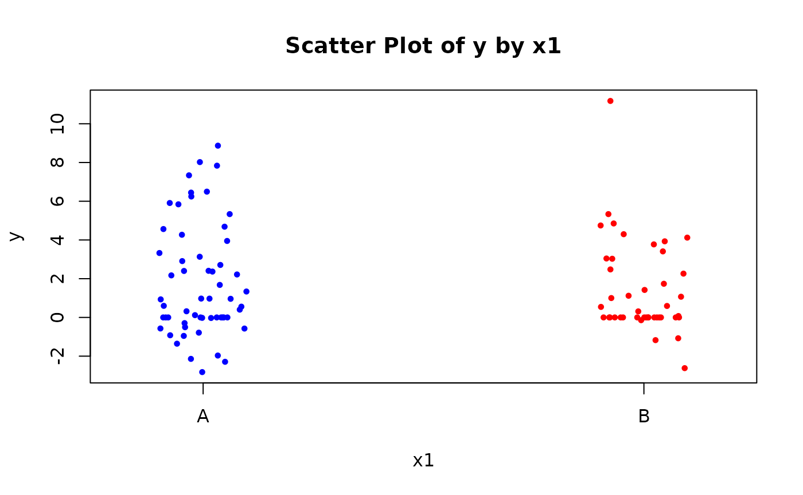
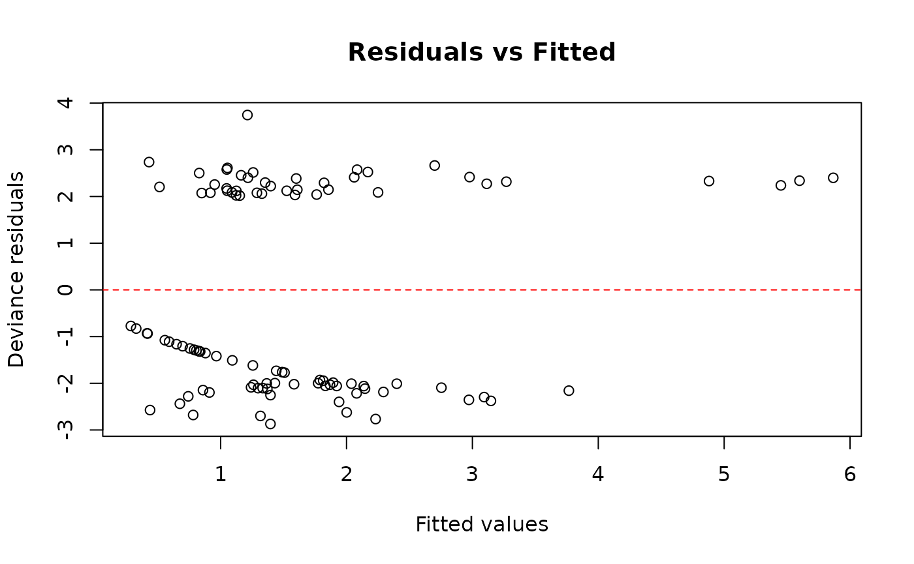

Compound Poisson-Normal Regression
Laszlo Pecze
2025-06-16
CPN-vignette.RmdIntroduction
In many applied settings—including insurance claims, biological systems, and environmental monitoring—the observed data arise from a random number of additive events, where each event contributes a continuous value. A natural model for such data is the Compound Poisson-Normal (CPN) distribution.
The CPN model assumes that the number of events follows a Poisson distribution, and that each event contributes an independent and identically distributed (i.i.d.) normally distributed amount.
Formally, let:
- denote the number of events,
- , independent of ,
Then the total observed outcome is modeled as a compound sum:
The resulting distribution of is known as the Compound Poisson-Normal distribution.
The first two moments of the CPN distribution are:
These follow from the properties of the compound distribution, combining Poisson and Gaussian contributions. The (approximate) probability density function (pdf) of is:
Where:
-
:
the observed total from the compound process
-
:
expected number of Poisson events
-
:
mean of each normal component
-
:
standard deviation of each normal component
-
:
number of events (from 1 to
)
- : maximum number of events used in the approximation
When , the sum is defined as a point mass at zero, and its probability is:
In theory, the compound distribution sums over an infinite range of possible Poisson event counts. In practice, this sum must be truncated at a finite maximum value , chosen so that the remaining tail probability is negligible.
Simulating Data
We’ll simulate a dataset that mimics typical CPN behavior. This includes both categorical and continuous predictors, and outcomes generated via a Poisson count of normally distributed values.
set.seed(123)
data <- simulate_cpn_data()
head(data)
# y x1 x2
# 1 -0.5703738 A 0.25331851
# 2 0.0000000 A -0.02854676
# 3 0.9613621 A -0.04287046
# 4 5.3350483 B 1.36860228
# 5 3.1328607 A -0.22577099
# 6 -2.6186645 B 1.51647060Plot the simulated data
Visualize the response y against predictor x2, colored by group x1.
# Scatter plot of y vs x1
stripchart(
y ~ x1, data = data,
vertical = TRUE, method = "jitter",
pch = 19, cex = 0.6,
col = c("blue", "red"),
xlab = "x1", ylab = "y",
main = "Scatter Plot of y by x1"
)
Fit the CPN Model
Fit a Compound Poisson-Normal regression model to the data using a standard formula interface. The response variable y is modeled as a function of predictors x1 (categorical) and x2 (continuous).
fit <- cpn(y ~ x1 + x2, data = data)Summary of Results
Get a summary of the fitted model, including coefficient estimates, standard errors, z-values, and p-values. The summary also includes estimates of the mu and sigma parameters (mean and SD of the normal component) and model fit statistics like AIC.
summary(fit)
# Call:
# cpn(formula = y ~ x1 + x2, data = data)
#
# Deviance Residuals:
# Min 1Q Median 3Q Max
# -2.871 -2.059 -1.269 2.181 3.745
#
# Coefficients:
# Estimate Std.Error z.value Pr.z
# (Intercept) 0.63754 0.15190 4.1969 2.705e-05 ***
# x1B -0.60713 0.22934 -2.6473 0.008114 **
# x2 0.53609 0.10791 4.9679 6.767e-07 ***
# ---
# Signif. codes: 0 '***' 0.001 '**' 0.01 '*' 0.05 '.' 0.1 ' ' 1
#
# Estimated mu parameter: 0.9600
# Estimated sigma parameter: 1.7062
#
# Null deviance: 478.20 on 99 degrees of freedom
# Residual deviance: 449.74 on 95 degrees of freedom
# AIC: 459.74Extracting Model Components
You can directly access key components of the fitted model object:
fit$coefficients
# (Intercept) x1B x2
# 0.6375359 -0.6071284 0.5360923
fit$mu
# mu
# 0.9599623
fit$sigma
# sigma
# 1.706243
fit$fitted_values[1:10] # preview only
# [1] 2.0802264 1.7884887 1.7748077 2.0611074 1.6090445 2.2311441 0.4313962
# [8] 1.3538511 1.9407450 2.0389587Coefficients and Interpretation
Use coef() to extract model coefficients. Setting full = FALSE shows only the linear predictor coefficients (excluding auxiliary parameters like mu and sigma).
Diagnostics and Residuals
Basic diagnostic plots and residuals help check model fit and detect issues like non-linearity or outliers.
plot(fit)
residuals(fit)[1:10]
# [1] -2.215482 -1.930328 -1.997946 2.411580 2.145066 -2.766042 2.737024
# [8] 2.297386 -2.398468 -2.008626Likelihood and Information Criteria
These metrics are useful for comparing model fit.
logLik() gives the log-likelihood, AIC() the
Akaike Information Criterion (lower is better), and vcov()
returns the variance-covariance matrix of the parameters.
logLik(fit)
# 'log Lik.' -224.8705 (df=5)
AIC(fit)
# [1] 459.741
vcov(fit)
# (Intercept) x1B x2 mu sigma
# (Intercept) 0.023075014 -0.018395473 -0.002512385 -0.010214396 -0.007321724
# x1B -0.018395473 0.052596614 0.000287386 0.002777711 -0.001478573
# x2 -0.002512385 0.000287386 0.011644724 -0.002747529 -0.001565976
# mu -0.010214396 0.002777711 -0.002747529 0.027438819 0.008114203
# sigma -0.007321724 -0.001478573 -0.001565976 0.008114203 0.033661888Type I Analysis of Deviance
The function anova(fit) provides a sequential (Type I)
analysis of deviance.
This examines the incremental contribution of each predictor to the
model’s fit, based on the order in which they appear in the formula.
anova(fit)
# Term Df Deviance Resid. Df Resid. Dev Pr(>Chi) Signif
# Residuals 97 478.2
# x1 1 6.7993 96 471.4 0.0091193 **
# x2 1 21.657 95 449.74 3.2607e-06 ***
# ---
# Signif. codes: 0 '***' 0.001 '**' 0.01 '*' 0.05 '.' 0.1 ' ' 1Model Update and Comparison
You can update a model (e.g., remove predictors) and compare nested models using the likelihood ratio test:
Prediction
Once you have fitted a Compound Poisson-Normal (CPN) regression model
using the cpn() function, you can generate predictions on
both the original data and new
observations using the predict() method for
cpn objects.
This method supports three prediction types:
- “link”: Returns the linear predictor .
- “rate”: Returns the rate component , representing the expected number of latent events.
- “response”: Returns the expected response , combining the frequency and magnitude components of the compound distribution.
Additionally, confidence intervals can be requested using the
interval = "confidence" argument, which computes
approximate normal-theory confidence intervals using
the delta method.
Predicting on the Original Data
By default, predict() uses the original dataset used for
model fitting. You can obtain point estimates or confidence intervals
for the fitted values.
# Point predictions on the response scale
predict(fit, type = "response")[1:5]
# [1] 2.080226 1.788489 1.774808 2.061107 1.609045
# Confidence intervals for response predictions
predict(fit, type = "response", interval = "confidence")[1:5, ]
# fit lwr upr
# 1 2.080226 1.1475902 3.012863
# 2 1.788489 0.9814659 2.595511
# 3 1.774808 0.9733248 2.576291
# 4 2.061107 0.8876666 3.234548
# 5 1.609045 0.8722838 2.345805Predicting on New Data
To make predictions on new data, provide a data.frame to
the newdata argument. The function will internally align
factor levels and construct the appropriate model matrix.
# Define new observations
new_df <- data.frame(
x1 = c("A", "A", "B", "B"),
x2 = c(-0.5, -0.2, -0.3, -0.3)
)
# Predictions on the link scale (linear predictor η)
predict(fit, newdata = new_df, type = "link", interval = "confidence")
# fit lwr upr
# 1 0.3694897 0.03861794 0.7003615
# 2 0.5303174 0.22324817 0.8373866
# 3 -0.1304202 -0.52855693 0.2677165
# 4 -0.1304202 -0.52855693 0.2677165
# Predictions on the rate scale (exp(η))
predict(fit, newdata = new_df, type = "rate", interval = "confidence")
# fit lwr upr
# 1 1.4469960 1.039373 2.014481
# 2 1.6994716 1.250131 2.310321
# 3 0.8777265 0.589455 1.306976
# 4 0.8777265 0.589455 1.306976
# Predictions on the response scale (μ × exp(η))
predict(fit, newdata = new_df, type = "response", interval = "confidence")
# fit lwr upr
# 1 1.3890617 0.7318477 2.046276
# 2 1.6314287 0.8861812 2.376676
# 3 0.8425844 0.4024248 1.282744
# 4 0.8425844 0.4024248 1.282744Confidence Intervals
When interval = "confidence" is used:
- On the link and rate scales, confidence intervals are based solely on the uncertainty in the regression coefficients ().
- On the response scale, the intervals additionally incorporate uncertainty in the mean magnitude parameter () using the delta method:
This provides a more accurate reflection of total uncertainty when predicting expected values of the compound outcome.
```
Conclusion
The CPN package enables effective modeling of
semicontinuous data using the Compound Poisson-Normal model. It supports
flexible model specification, S3 methods for diagnostics and inference,
and prediction on new data. For more advanced use, refer to the function
documentation or the package reference manual.